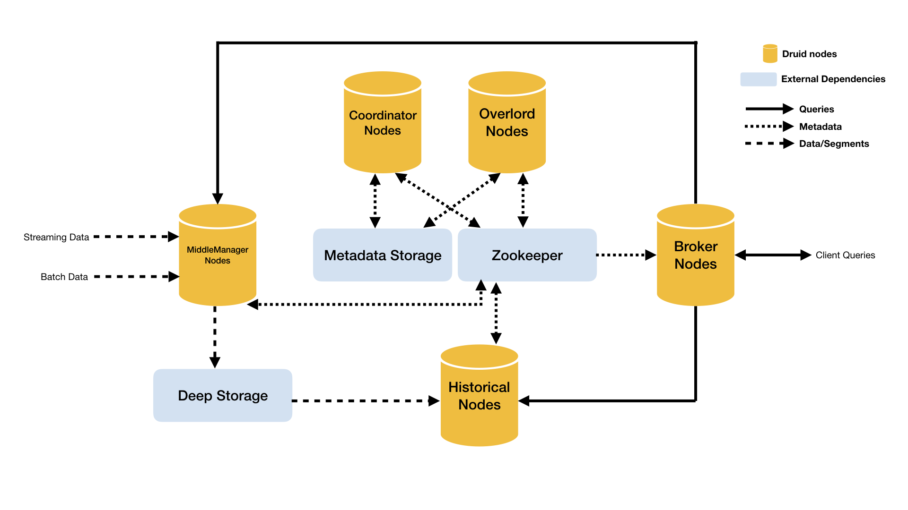

Druid has several process types:
Druid processes can be deployed any way you like, but for ease of deployment we suggest organizing them into three server types:

This section describes the Druid processes and the suggested Master/Query/Data server organization, as shown in the architecture diagram above.
A Master server manages data ingestion and availability: it is responsible for starting new ingestion jobs and coordinating availability of data on the "Data servers" described below.
Within a Master server, functionality is split between two processes, the Coordinator and Overlord.
Coordinator processes watch over the Historical processes on the Data servers. They are responsible for assigning segments to specific servers, and for ensuring segments are well-balanced across Historicals.
Overlord processes watch over the MiddleManager processes on the Data servers and are the controllers of data ingestion into Druid. They are responsible for assigning ingestion tasks to MiddleManagers and for coordinating segment publishing.
A Query server provides the endpoints that users and client applications interact with, routing queries to Data servers or other Query servers (and optionally proxied Master server requests as well).
Within a Query server, functionality is split between two processes, the Broker and Router.
Broker processes receive queries from external clients and forward those queries to Data servers. When Brokers receive results from those subqueries, they merge those results and return them to the caller. End users typically query Brokers rather than querying Historicals or MiddleManagers processes on Data servers directly.
Router processes are optional processes that provide a unified API gateway in front of Druid Brokers, Overlords, and Coordinators. They are optional since you can also simply contact the Druid Brokers, Overlords, and Coordinators directly.
The Router also runs the Druid Console, a management UI for datasources, segments, tasks, data processes (Historicals and MiddleManagers), and coordinator dynamic configuration. The user can also run SQL and native Druid queries within the console.
A Data server executes ingestion jobs and stores queryable data.
Within a Data server, functionality is split between two processes, the Historical and MiddleManager.
Historical processes are the workhorses that handle storage and querying on "historical" data (including any streaming data that has been in the system long enough to be committed). Historical processes download segments from deep storage and respond to queries about these segments. They don't accept writes.
MiddleManager processes handle ingestion of new data into the cluster. They are responsible for reading from external data sources and publishing new Druid segments.
Peon processes are task execution engines spawned by MiddleManagers. Each Peon runs a separate JVM and is responsible for executing a single task. Peons always run on the same host as the MiddleManager that spawned them.
Druid processes can be colocated based on the Master/Data/Query server organization as described above. This organization generally results in better utilization of hardware resources for most clusters.
For very large scale clusters, however, it can be desirable to split the Druid processes such that they run on individual servers to avoid resource contention.
This section describes guidelines and configuration parameters related to process colocation.
The workload on the Coordinator process tends to increase with the number of segments in the cluster. The Overlord's workload also increases based on the number of segments in the cluster, but to a lesser degree than the Coordinator.
In clusters with very high segment counts, it can make sense to separate the Coordinator and Overlord processes to provide more resources for the Coordinator's segment balancing workload.
The Coordinator and Overlord processes can be run as a single combined process by setting the druid.coordinator.asOverlord.enabled property.
Please see Coordinator Configuration: Operation for details.
With higher levels of ingestion or query load, it can make sense to deploy the Historical and MiddleManager processes on separate hosts to to avoid CPU and memory contention.
The Historical also benefits from having free memory for memory mapped segments, which can be another reason to deploy the Historical and MiddleManager processes separately.